<div class="listing listing_all-new listing_js listing-nocover" data-card-count="15"><div class="listing__content listing__content_js"><ul class="listing__rows listing__rows_js"><li class="listing__column listing__column_all-new listing__column_js"><div class="listing__card "><div class="card card_all-new"><div class="card__heading
                    card__heading_all-new

                    "><a class="link link_color" href="https://russian.rt.com/science/news/811021-vakcina-covid-19-iogurt-zhivotnye">
                Вакцина от COVID-19 в виде йогурта показала образование антител у животных
            </a></div><div class="card__cover card__cover_all-new"><div class="cover"><div class="cover__media cover__media_ratio "><a href="https://russian.rt.com/science/news/811021-vakcina-covid-19-iogurt-zhivotnye" class="cover__link link ">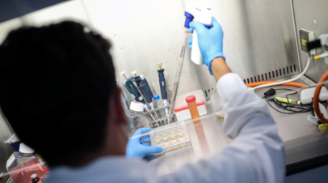</a></div></div></div><div class="card__summary
                        card__summary_all-new_cover
                        ">
                В ходе проведения испытаний на животных вакцины от
коронавируса в виде кисломолочного продукта было установлено образование
 антител. Об этом, как передаёт РИА Новости, заявил руководитель отдела
молекулярной микробиологии Института экспериментальной медицины
Александр Суворов.
            </div><div class="card__date-time
                    card__date-time_all-new_cover
                    "><time class="date" datetime="2020-12-8 16:14">
		8 декабря 2020, 16:14
	</time></div></div></div></li><li class="listing__column listing__column_all-new listing__column_js"><div class="listing__card "><div class="card card_all-new"><div class="card__heading
                    card__heading_all-new

                    "><a class="link link_color" href="https://russian.rt.com/russia/news/810363-dagestan-gibel-tyuleni">
                В Дагестане выясняют причину гибели каспийских тюленей
            </a></div><div class="card__cover card__cover_all-new"><div class="cover"><div class="cover__media cover__media_ratio "><a href="https://russian.rt.com/russia/news/810363-dagestan-gibel-tyuleni" class="cover__link link ">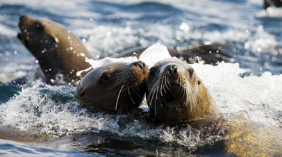</a></div></div></div><div class="card__summary
                        card__summary_all-new_cover
                        ">
                В Дагестане специалисты&nbsp;Каспийского
научно-исследовательского института рыбного хозяйства (КаспНИРХ) и
Росрыболовства устанавливают причины гибели&nbsp;каспийских тюленей,
обнаруженных на&nbsp;побережье Каспийского моря.
            </div><div class="card__date-time
                    card__date-time_all-new_cover
                    "><time class="date" datetime="2020-12-6 19:38">
		6 декабря 2020, 19:38
	</time></div></div></div></li><li class="listing__column listing__column_all-new listing__column_js"><div class="listing__card "><div class="card card_all-new"><div class="card__heading
                    card__heading_all-new

                    "><a class="link link_color" href="https://russian.rt.com/nopolitics/video/809740-olen-ded-moroz-surgut-novyi-god">
                Выбор Валерчика: в Сургуте олень помог Деду Морозу подобрать подарки для детей
            </a></div><div class="card__cover card__cover_all-new"><div class="cover"><div class="cover__media cover__media_ratio cover__image_type_video"><a href="https://russian.rt.com/nopolitics/video/809740-olen-ded-moroz-surgut-novyi-god" class="cover__link link ">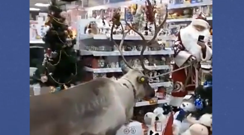</a></div></div></div><div class="card__summary
                        card__summary_all-new_cover
                        ">
                В сети появилось видео, снятое в одном из магазинов
Сургута. На кадрах олень по кличке Валерчик изучает полки с новогодними
подарками и другими товарами. Так он помогает Деду Морозу выбирать
подарки для детей. По словам сотрудников магазина, Валерчик вёл себя
культурно и ничего не сломал.
            </div><div class="card__date-time
                    card__date-time_all-new_cover
                    "><time class="date" datetime="2020-12-4 18:53">
		4 декабря 2020, 18:53
	</time></div></div></div></li><li class="listing__column static-one"><div id="leaderboard"><script type="text/javascript">
                        window.Ya.adfoxCode.create(_adv.place['leaderboard']);
                    </script><div id="yandex_rtb_4245357872" class="a3w9NbU yandex_rtb_R-A-188279-41"><yatag class="y7658ec7 k7650264" id="y7658ec7" style="" lang="ru"><yatag class="f75571eab x3e1fc698 g8c4cd1fb l7db0de2b"><yatag class="c4ed2f49b kb381b34e a4bf6cb4c de9c4d71d bf98c03ea" style="min-height: 90px !important; min-width: 728px !important; max-width: 728px !important;"><yatag class="p8e9c3d0b j1217c56" style="width: 728px !important; min-height: 90px !important;"><yatag data-id="72057603954013938" class="j20f00a2 q4421eda8 qc7e76d57 p690c41ee" style="width: 726px !important; height: 88px !important;"><yatag class="r88351d3b" style="min-height: 88px !important; font-size: 12.872px !important;"><yatag class="g8ca0c94b"><a class="aa313fad0 ld7585143 td719350b" href="https://direct.yandex.ru/?partner" target="_blank" rel="noopener"><yatag class="kebadcab9 pe89650ad">₽</yatag><yatag class="n9599d224 f1debca45"><yatag class="nb8c5405d"></yatag><yatag class="w35fdc059">Яндекс.Директ</yatag></yatag></a><yatag class="s9da71800" style="padding-bottom: 0px !important;"><a class="yf42de2c2 y8def36a5 td719350b" style="min-width: 88px !important; max-width: 88px !important;" href="https://an.yandex.ru/count/WpCejI_zO0a3JHa0v2bgSpQ7vtngD0K02GGnze3FNm00000uxgg9dU2b2u01qSIdFeW1fEZBjLMG0UJRs_39W8200fW1vDlRy4cW0Roe0Rou0TJQpwaWm042s06UwDoK0U01bBgU6kW1MYcW0j2FXXQv0hY-fvLXBHxjy0Ayw9Vq1O03mzhZpWU80u25hfmBc0FtZky2-0JvuwO2Y0Mnohu1a0NvuwO2e0Muzrce1U_uIh05x_XAk0Nl-4h01PxvtG781TYsED05pSmZjaOgrRaRHI7H1kbsWvSSZaaM1G000907MAa7twf4_6KYj6Mu1xG6m0VeuSY3Y07W2EY7WqZiWlCXGFK_oGhpfHTPZ0jIgWiGHAOvBz-g000bif01zBNe2x7AlW7m2mg83ERtthu1gGmms-cujqRTF-WCdmQO3UYC5p-W3i24FT_LqlFTp8ZQPO_orXgG4DBKvipSijgI9SWGmB2I0j0GmfUlN_WGzF__0O0HxV__zB3aWGVW4Q2tUUWHyVUViRJ4nhWq8kH0fR7Xawervp_f4eRndvhurS-ty1Bu4WE04pA84mEG4sIe4_dzgkMoy8lztk0Jx_XAY1JzhwE7luAp_cEW5E_uIgWK-UEc0h0KWFYpDRWKWEI24C0KWCZEjD2jZnFO5AI6hlu5u1G1w1G4o1N5ajRs3z0Lf8Qk_WNO5S6AzkoZZxpyO_205fMGW8w0W7IW5j3-g_q5i1Qz0yaMq1Rczzw-0O4Nc1VahQSUg1S9k1S1m1Srs1V0X3tW5_JT__G5w1S1-1U0rB7-1PaOe1WJi1Z1vBt-1RWO0T0O3_WOWwtN--tYexH-W1c96LyGa1a1e1c00R0PjesfgPttng8Xk1d_0T8P4dbXOdDVSsLoTcLoBt8qE3SjC-0P1UZmAI1X10P2p203ZMCio0EV4PvdHexSMYCduU8kYppAv312qcRSfT7iWsu7SGGozZrzYKlA-K1jhqaNpwqRy36D8kgvegsxJplvCFouIJ2P1XjinnkO08BFNU11fHFOZN2_aeIZyueRzFW8sllyM90tDq9Ma0YBP-mEjNvt5pjSgZ04XmgX2_OvKmm0~1?stat-id=41&amp;test-tag=549206066471937&amp;format-type=9&amp;actual-format=40&amp;banner-test-tags=eyI3MjA1NzYwMzk1NDAxMzkzOCI6IjMyNzY5In0%3D" target="_blank" rel="noopener"><yatag class="f51c4b944"><yatag class="kbbb19408"><yatag style="position: absolute !important; width: 100% !important; padding-top: 100% !important; transform: translate(0%) scale(1) !important; transform-origin: 50% 44.4444% 0px !important;" class=""></yatag></yatag></yatag><yatag class="r902b218e"></yatag></a><yatag class="de0ab3226"><yatag class="x9869a722 pb5712bda" elementtiming="tgo-client-text"><a class="yf42de2c2 a519b493d td719350b" href="https://an.yandex.ru/count/WpCejI_zO0a3JHa0v2bgSpQ7vtngD0K02GGnze3FNm00000uxgg9dU2b2u01qSIdFeW1fEZBjLMG0UJRs_39W8200fW1vDlRy4cW0Roe0Rou0TJQpwaWm042s06UwDoK0U01bBgU6kW1MYcW0j2FXXQv0hY-fvLXBHxjy0Ayw9Vq1O03mzhZpWU80u25hfmBc0FtZky2-0JvuwO2Y0Mnohu1a0NvuwO2e0Muzrce1U_uIh05x_XAk0Nl-4h01PxvtG781TYsED05pSmZjaOgrRaRHI7H1kbsWvSSZaaM1G000907MAa7twf4_6KYj6Mu1xG6m0VeuSY3Y07W2EY7WqZiWlCXGFK_oGhpfHTPZ0jIgWiGHAOvBz-g000bif01zBNe2x7AlW7m2mg83ERtthu1gGmms-cujqRTF-WCdmQO3UYC5p-W3i24FT_LqlFTp8ZQPO_orXgG4DBKvipSijgI9SWGmB2I0j0GmfUlN_WGzF__0O0HxV__zB3aWGVW4Q2tUUWHyVUViRJ4nhWq8kH0fR7Xawervp_f4eRndvhurS-ty1Bu4WE04pA84mEG4sIe4_dzgkMoy8lztk0Jx_XAY1JzhwE7luAp_cEW5E_uIgWK-UEc0h0KWFYpDRWKWEI24C0KWCZEjD2jZnFO5AI6hlu5u1G1w1G4o1N5ajRs3z0Lf8Qk_WNO5S6AzkoZZxpyO_205fMGW8w0W7IW5j3-g_q5i1Qz0yaMq1Rczzw-0O4Nc1VahQSUg1S9k1S1m1Srs1V0X3tW5_JT__G5w1S1-1U0rB7-1PaOe1WJi1Z1vBt-1RWO0T0O3_WOWwtN--tYexH-W1c96LyGa1a1e1c00R0PjesfgPttng8Xk1d_0T8P4dbXOdDVSsLoTcLoBt8qE3SjC-0P1UZmAI1X10P2p203ZMCio0EV4PvdHexSMYCduU8kYppAv312qcRSfT7iWsu7SGGozZrzYKlA-K1jhqaNpwqRy36D8kgvegsxJplvCFouIJ2P1XjinnkO08BFNU11fHFOZN2_aeIZyueRzFW8sllyM90tDq9Ma0YBP-mEjNvt5pjSgZ04XmgX2_OvKmm0~1?stat-id=41&amp;test-tag=549206066471937&amp;format-type=9&amp;actual-format=40&amp;banner-test-tags=eyI3MjA1NzYwMzk1NDAxMzkzOCI6IjMyNzY5In0%3D" target="_blank" rel="noopener"><yatag class="kebadcab9 t7306e9d7">До −60%. Курс: Python-разработчик</yatag></a></yatag><yatag class="sc76cdb52"><a class="yf42de2c2 v64e9974d td719350b" href="https://an.yandex.ru/count/WpCejI_zO0a3JHa0v2bgSpQ7vtngD0K02GGnze3FNm00000uxgg9dU2b2u01qSIdFeW1fEZBjLMG0UJRs_39W8200fW1vDlRy4cW0Roe0Rou0TJQpwaWm042s06UwDoK0U01bBgU6kW1MYcW0j2FXXQv0hY-fvLXBHxjy0Ayw9Vq1O03mzhZpWU80u25hfmBc0FtZky2-0JvuwO2Y0Mnohu1a0NvuwO2e0Muzrce1U_uIh05x_XAk0Nl-4h01PxvtG781TYsED05pSmZjaOgrRaRHI7H1kbsWvSSZaaM1G000907MAa7twf4_6KYj6Mu1xG6m0VeuSY3Y07W2EY7WqZiWlCXGFK_oGhpfHTPZ0jIgWiGHAOvBz-g000bif01zBNe2x7AlW7m2mg83ERtthu1gGmms-cujqRTF-WCdmQO3UYC5p-W3i24FT_LqlFTp8ZQPO_orXgG4DBKvipSijgI9SWGmB2I0j0GmfUlN_WGzF__0O0HxV__zB3aWGVW4Q2tUUWHyVUViRJ4nhWq8kH0fR7Xawervp_f4eRndvhurS-ty1Bu4WE04pA84mEG4sIe4_dzgkMoy8lztk0Jx_XAY1JzhwE7luAp_cEW5E_uIgWK-UEc0h0KWFYpDRWKWEI24C0KWCZEjD2jZnFO5AI6hlu5u1G1w1G4o1N5ajRs3z0Lf8Qk_WNO5S6AzkoZZxpyO_205fMGW8w0W7IW5j3-g_q5i1Qz0yaMq1Rczzw-0O4Nc1VahQSUg1S9k1S1m1Srs1V0X3tW5_JT__G5w1S1-1U0rB7-1PaOe1WJi1Z1vBt-1RWO0T0O3_WOWwtN--tYexH-W1c96LyGa1a1e1c00R0PjesfgPttng8Xk1d_0T8P4dbXOdDVSsLoTcLoBt8qE3SjC-0P1UZmAI1X10P2p203ZMCio0EV4PvdHexSMYCduU8kYppAv312qcRSfT7iWsu7SGGozZrzYKlA-K1jhqaNpwqRy36D8kgvegsxJplvCFouIJ2P1XjinnkO08BFNU11fHFOZN2_aeIZyueRzFW8sllyM90tDq9Ma0YBP-mEjNvt5pjSgZ04XmgX2_OvKmm0~1?stat-id=41&amp;test-tag=549206066471937&amp;format-type=9&amp;actual-format=40&amp;banner-test-tags=eyI3MjA1NzYwMzk1NDAxMzkzOCI6IjMyNzY5In0%3D" target="_blank" rel="noopener"><yatag class="kebadcab9 t7306e9d7">Новогодняя распродажа! Все&nbsp;курсы Skillbox с&nbsp;максимальной скидкой!</yatag></a></yatag></yatag><yatag class="d7cc819f4 kc6044987"><a class="yf42de2c2 fc710edf8 sf08ae47 td719350b" href="https://an.yandex.ru/count/WpCejI_zO0a3JHa0v2bgSpQ7vtngD0K02GGnze3FNm00000uxgg9dU2b2u01qSIdFeW1fEZBjLMG0UJRs_39W8200fW1vDlRy4cW0Roe0Rou0TJQpwaWm042s06UwDoK0U01bBgU6kW1MYcW0j2FXXQv0hY-fvLXBHxjy0Ayw9Vq1O03mzhZpWU80u25hfmBc0FtZky2-0JvuwO2Y0Mnohu1a0NvuwO2e0Muzrce1U_uIh05x_XAk0Nl-4h01PxvtG781TYsED05pSmZjaOgrRaRHI7H1kbsWvSSZaaM1G000907MAa7twf4_6KYj6Mu1xG6m0VeuSY3Y07W2EY7WqZiWlCXGFK_oGhpfHTPZ0jIgWiGHAOvBz-g000bif01zBNe2x7AlW7m2mg83ERtthu1gGmms-cujqRTF-WCdmQO3UYC5p-W3i24FT_LqlFTp8ZQPO_orXgG4DBKvipSijgI9SWGmB2I0j0GmfUlN_WGzF__0O0HxV__zB3aWGVW4Q2tUUWHyVUViRJ4nhWq8kH0fR7Xawervp_f4eRndvhurS-ty1Bu4WE04pA84mEG4sIe4_dzgkMoy8lztk0Jx_XAY1JzhwE7luAp_cEW5E_uIgWK-UEc0h0KWFYpDRWKWEI24C0KWCZEjD2jZnFO5AI6hlu5u1G1w1G4o1N5ajRs3z0Lf8Qk_WNO5S6AzkoZZxpyO_205fMGW8w0W7IW5j3-g_q5i1Qz0yaMq1Rczzw-0O4Nc1VahQSUg1S9k1S1m1Srs1V0X3tW5_JT__G5w1S1-1U0rB7-1PaOe1WJi1Z1vBt-1RWO0T0O3_WOWwtN--tYexH-W1c96LyGa1a1e1c00R0PjesfgPttng8Xk1d_0T8P4dbXOdDVSsLoTcLoBt8qE3SjC-0P1UZmAI1X10P2p203ZMCio0EV4PvdHexSMYCduU8kYppAv312qcRSfT7iWsu7SGGozZrzYKlA-K1jhqaNpwqRy36D8kgvegsxJplvCFouIJ2P1XjinnkO08BFNU11fHFOZN2_aeIZyueRzFW8sllyM90tDq9Ma0YBP-mEjNvt5pjSgZ04XmgX2_OvKmm0~1?stat-id=41&amp;test-tag=549206066471937&amp;format-type=9&amp;actual-format=40&amp;banner-test-tags=eyI3MjA1NzYwMzk1NDAxMzkzOCI6IjMyNzY5In0%3D" target="_blank" rel="noopener"><yatag class="m5c1fb170"><yatag class="f9234c7e4"><yatag class="kebadcab9">Узнать больше</yatag></yatag></yatag></a><yatag class="y8f1b7cc3 o1e7d075c"><yatag class="m5c1fb170"><yatag class="f9234c7e4"><a class="yf42de2c2 k85a3b1fc td719350b" href="https://an.yandex.ru/count/WpCejI_zO0a3JHa0v2bgSpQ7vtngD0K02GGnze3FNm00000uxgg9dU2b2u01qSIdFeW1fEZBjLMG0UJRs_39W8200fW1vDlRy4cW0Roe0Rou0TJQpwaWm042s06UwDoK0U01bBgU6kW1MYcW0j2FXXQv0hY-fvLXBHxjy0Ayw9Vq1O03mzhZpWU80u25hfmBc0FtZky2-0JvuwO2Y0Mnohu1a0NvuwO2e0Muzrce1U_uIh05x_XAk0Nl-4h01PxvtG781TYsED05pSmZjaOgrRaRHI7H1kbsWvSSZaaM1G000907MAa7twf4_6KYj6Mu1xG6m0VeuSY3Y07W2EY7WqZiWlCXGFK_oGhpfHTPZ0jIgWiGHAOvBz-g000bif01zBNe2x7AlW7m2mg83ERtthu1gGmms-cujqRTF-WCdmQO3UYC5p-W3i24FT_LqlFTp8ZQPO_orXgG4DBKvipSijgI9SWGmB2I0j0GmfUlN_WGzF__0O0HxV__zB3aWGVW4Q2tUUWHyVUViRJ4nhWq8kH0fR7Xawervp_f4eRndvhurS-ty1Bu4WE04pA84mEG4sIe4_dzgkMoy8lztk0Jx_XAY1JzhwE7luAp_cEW5E_uIgWK-UEc0h0KWFYpDRWKWEI24C0KWCZEjD2jZnFO5AI6hlu5u1G1w1G4o1N5ajRs3z0Lf8Qk_WNO5S6AzkoZZxpyO_205fMGW8w0W7IW5j3-g_q5i1Qz0yaMq1Rczzw-0O4Nc1VahQSUg1S9k1S1m1Srs1V0X3tW5_JT__G5w1S1-1U0rB7-1PaOe1WJi1Z1vBt-1RWO0T0O3_WOWwtN--tYexH-W1c96LyGa1a1e1c00R0PjesfgPttng8Xk1d_0T8P4dbXOdDVSsLoTcLoBt8qE3SjC-0P1UZmAI1X10P2p203ZMCio0EV4PvdHexSMYCduU8kYppAv312qcRSfT7iWsu7SGGozZrzYKlA-K1jhqaNpwqRy36D8kgvegsxJplvCFouIJ2P1XjinnkO08BFNU11fHFOZN2_aeIZyueRzFW8sllyM90tDq9Ma0YBP-mEjNvt5pjSgZ04XmgX2_OvKmm0~1?stat-id=41&amp;test-tag=549206066471937&amp;format-type=9&amp;actual-format=40&amp;banner-test-tags=eyI3MjA1NzYwMzk1NDAxMzkzOCI6IjMyNzY5In0%3D" target="_blank" rel="noopener"><yatag class="kebadcab9">skillbox.ru</yatag></a></yatag></yatag></yatag></yatag></yatag><yatag class="xda2b62c7 rfdcaf49e"></yatag></yatag></yatag><yatag class="sb491ec66 c5f56f3cb"><yatag class="had34abf1"><yatag class="x58198750"><yatag></yatag></yatag></yatag></yatag><yatag class="hcfdb1ded y1802527e na7824d9 x6bd9f9e6"><yatag class="gc1c149e8"><yatag class="dd072c478 pb8d359bf k785326e0 e7a8aa270"><yatag class="da34b1f9f"><yatag style="width: 8px !important; height: 8px !important;" class="ae85f94ff"><svg width="8px" height="8px" viewBox="0 0 14 14"><polygon points="8.28616426 7.02081528 13.6638974 12.3985484 12.3985484 13.6638974 7.02081528 8.28616426 1.64308213 13.6638974 0.377733152 12.3985484 5.7554663 7.02081528 0.377733152 1.64308213 1.64308213 0.377733152 7.02081528 5.7554663 12.3985484 0.377733152 13.6638974 1.64308213"></polygon></svg></yatag><yatag class="n9599d224 de9d734ad"><yatag class="nb8c5405d sea7b51b9"></yatag><yatag class="w35fdc059 e72c18bd">Скрыть&nbsp;объявление</yatag></yatag></yatag></yatag></yatag></yatag></yatag></yatag></yatag><yatag id="b3210416e"><yatag class="gc10e6a99"></yatag></yatag></yatag></yatag></div></div></li><li class="listing__column listing__column_all-new listing__column_js"><div class="listing__card "><div class="card card_all-new"><div class="card__heading
                    card__heading_all-new

                    "><a class="link link_color" href="https://russian.rt.com/russia/video/809445-priyut-dlya-zhivotnyh-dolgi-spasenie">
                «Чудо случилось»: пользователи соцсетей помогли приюту для животных расплатиться с долгами
            </a></div><div class="card__cover card__cover_all-new"><div class="cover"><div class="cover__media cover__media_ratio cover__image_type_video"><a href="https://russian.rt.com/russia/video/809445-priyut-dlya-zhivotnyh-dolgi-spasenie" class="cover__link link ">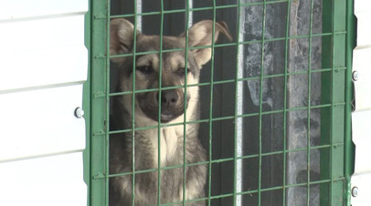</a></div></div></div><div class="card__summary
                        card__summary_all-new_cover
                        ">
                Подопечные частного приюта для животных в Татарстане
оказались на грани голода из-за накопившегося долга в размере миллиона
рублей. Основатель приюта Марина Симакова обратилась к пользователям
соцсетей, разместив пост с просьбой о помощи. Через сутки необходимая
сумма была собрана. Приюту удалось рассчитаться с долгами за корм для
животных, заплатить рабочим за строительство новых вольеров, а также
внести плату в ветклинику, передержку и закупить новые будки для собак.
            </div><div class="card__date-time
                    card__date-time_all-new_cover
                    "><time class="date" datetime="2020-12-3 17:40">
		3 декабря 2020, 17:40
	</time></div></div></div></li><li class="listing__column listing__column_all-new listing__column_js"><div class="listing__card "><div class="card card_all-new"><div class="card__heading
                    card__heading_all-new

                    "><a class="link link_color" href="https://russian.rt.com/russia/article/808880-rebyonok-opeka-dom-podzhog">
                «Необоснованные проверки»: в Нижнем Новгороде опека
хочет забрать ребёнка из семьи, которая столкнулась с травлей
            </a></div><div class="card__cover card__cover_all-new"><div class="cover"><div class="cover__media cover__media_ratio "><a href="https://russian.rt.com/russia/article/808880-rebyonok-opeka-dom-podzhog" class="cover__link link "></a></div></div></div><div class="card__summary
                        card__summary_all-new_cover
                        ">
                В Нижнем Новгороде органы опеки через суд добиваются
изъятия из семьи пятилетней Нади Родионовой. Девочка живёт с мамой и
бабушкой, которые, по мнению сотрудников соцслужбы, не могут создать
надлежащих условий для воспитания ребёнка. Однако близкие семьи
утверждают, что девочка окружена заботой, а поводом для нападок на семью
 послужила общественная деятельность. Бабушка является профсоюзным
активистом, а мама — зоозащитницей. Ранее семья уже подвергалась травле,
 а дом, в котором располагался их приют для бездомных собак, был сожжён.
            </div><div class="card__date-time
                    card__date-time_all-new_cover
                    "><time class="date" datetime="2020-12-2 19:16">
		2 декабря 2020, 19:16
	</time></div></div></div></li><li class="listing__column listing__column_all-new listing__column_js"><div class="listing__card "><div class="card card_all-new"><div class="card__heading
                    card__heading_all-new

                    "><a class="link link_color" href="https://russian.rt.com/russia/news/808915-mts-moskovskii-zoopark-deti-ekologiya">
                МТС и Московский зоопарк запустили онлайн-программу по экологии для школьников
            </a></div><div class="card__cover card__cover_all-new"><div class="cover"><div class="cover__media cover__media_ratio "><a href="https://russian.rt.com/russia/news/808915-mts-moskovskii-zoopark-deti-ekologiya" class="cover__link link "></a></div></div></div><div class="card__summary
                        card__summary_all-new_cover
                        ">
                Компания МТС и Московский зоопарк запустили
творческо-образовательную программу по экологии для школьников в рамках
федерального благотворительного проекта «Поколение М».
            </div><div class="card__date-time
                    card__date-time_all-new_cover
                    "><time class="date" datetime="2020-12-2 15:50">
		2 декабря 2020, 15:50
	</time></div></div></div></li><li class="listing__column listing__column_all-new listing__column_js"><div class="listing__card "><div class="card card_all-new"><div class="card__heading
                    card__heading_all-new

                    "><a class="link link_color" href="https://russian.rt.com/science/article/808585-nasekomye-krylya">
                Родственные связи: учёные разгадали загадку происхождения крыльев у насекомых
            </a></div><div class="card__cover card__cover_all-new"><div class="cover"><div class="cover__media cover__media_ratio "><a href="https://russian.rt.com/science/article/808585-nasekomye-krylya" class="cover__link link ">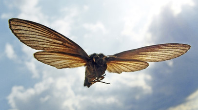</a></div></div></div><div class="card__summary
                        card__summary_all-new_cover
                        ">
                Американские биологи определили, как появились крылья у
насекомых. Оказалось, что у далёких ракообразных предков насекомых в
результате эволюции сегменты ног, наиболее близкие к телу, стали частью
его внешней оболочки. В дальнейшем эти сегменты переместились на спину и
 образовали крылья. К такому выводу учёные пришли в результате геномных
исследований.
            </div><div class="card__date-time
                    card__date-time_all-new_cover
                    "><time class="date" datetime="2020-12-1 22:00">
		1 декабря 2020, 22:00
	</time></div></div></div></li><li class="listing__column listing__column_all-new listing__column_js"><div class="listing__card "><div class="card card_all-new"><div class="card__heading
                    card__heading_all-new

                    "><a class="link link_color" href="https://russian.rt.com/russia/news/808598-adygeya-ohrana-lesov">
                В горах Адыгеи создадут два поста для охраны лесов от браконьеров
            </a></div><div class="card__cover card__cover_all-new"><div class="cover"><div class="cover__media cover__media_ratio "><a href="https://russian.rt.com/russia/news/808598-adygeya-ohrana-lesov" class="cover__link link ">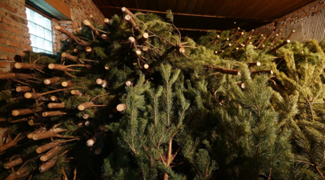</a></div></div></div><div class="card__summary
                        card__summary_all-new_cover
                        ">
                В декабре 2020 года в горной части Адыгеи власти
республики планируют создать два новых поста для охраны лесного фонда и
животных.
            </div><div class="card__date-time
                    card__date-time_all-new_cover
                    "><time class="date" datetime="2020-12-1 15:14">
		1 декабря 2020, 15:14
	</time></div></div></div></li><li class="listing__column listing__column_all-new listing__column_js"><div class="listing__card "><div class="card card_all-new"><div class="card__heading
                    card__heading_all-new

                    "><a class="link link_color" href="https://russian.rt.com/russia/news/808551-primore-investicii-zhivotnovodstvo">
                В Приморье рассказали о ситуации в секторе животноводства
            </a></div><div class="card__cover card__cover_all-new"><div class="cover"><div class="cover__media cover__media_ratio "><a href="https://russian.rt.com/russia/news/808551-primore-investicii-zhivotnovodstvo" class="cover__link link ">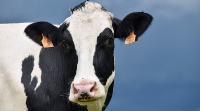</a></div></div></div><div class="card__summary
                        card__summary_all-new_cover
                        ">
                Председатель комитета по продовольственной политике и
природопользованию заксобрания Приморского края Евгений Зотов рассказал,
 что ряд крупнейших инвестиционных проектов в животноводческом секторе,
которые в настоящее время реализуются в регионе, нуждаются в госпомощи.
            </div><div class="card__date-time
                    card__date-time_all-new_cover
                    "><time class="date" datetime="2020-12-1 13:19">
		1 декабря 2020, 13:19
	</time></div></div></div></li><li class="listing__column listing__column_all-new listing__column_js"><div class="listing__card "><div class="card card_all-new"><div class="card__heading
                    card__heading_all-new

                    "><a class="link link_color" href="https://russian.rt.com/science/article/806065-klimat-mongolii">
                Безжизненная пустыня: почему климат Монголии становится необратимо жарким и сухим
            </a></div><div class="card__cover card__cover_all-new"><div class="cover"><div class="cover__media cover__media_ratio "><a href="https://russian.rt.com/science/article/806065-klimat-mongolii" class="cover__link link ">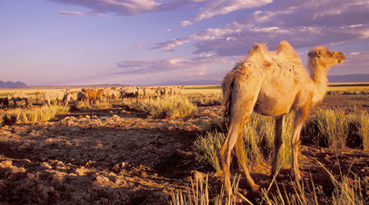</a></div></div></div><div class="card__summary
                        card__summary_all-new_cover
                        ">
                Международный коллектив климатологов установил, что
засушливое Монгольское плато на востоке Центральной Азии превращается в
бесплодную пустыню. Необратимые изменения, особенно заметные в последние
 два десятилетия, подтверждаются исследованием годовых колец хвойных
деревьев региона. На четверть сократилось число крупных озёр, а
сохранившиеся водоёмы уменьшились в размерах. На грани вымирания
оказались многие виды животных, в том числе дикие овцы, антилопы и даже
верблюды.
            </div><div class="card__date-time
                    card__date-time_all-new_cover
                    "><time class="date" datetime="2020-11-27 03:13">
		27 ноября 2020, 03:13
	</time></div></div></div></li><li class="listing__column listing__column_all-new listing__column_js"><div class="listing__card "><div class="card card_all-new"><div class="card__heading
                    card__heading_all-new

                    "><a class="link link_color" href="https://russian.rt.com/science/foto/805577-fotokonkurs-zabavnyh-domashnih-pitomcev">
                Весёлые питомцы: подведены итоги международного фотоконкурса забавных домашних животных
            </a></div><div class="card__cover card__cover_all-new"><div class="cover"><div class="cover__media cover__media_ratio "><a href="https://russian.rt.com/science/foto/805577-fotokonkurs-zabavnyh-domashnih-pitomcev" class="cover__link link ">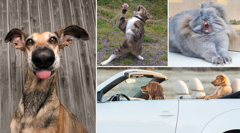</a></div></div></div><div class="card__summary
                        card__summary_all-new_cover
                        ">
                Жюри международного фотоконкурса забавных домашних
животных Mars Petcare Comedy Pet Photography Awards объявило лауреатов
2020 года. В соревновании приняли участие более 2000 фоторабот из 81
страны. Победитель удостоен денежной награды в 3 тыс. фунтов стерлингов.
 Конкурс призван привлечь внимание к проблеме бездомных животных. Часть
полученных от его проведения доходов организаторы направляют на
благотворительность.
            </div><div class="card__date-time
                    card__date-time_all-new_cover
                    "><time class="date" datetime="2020-11-25 01:03">
		25 ноября 2020, 01:03
	</time></div></div></div></li><li class="listing__column listing__column_all-new listing__column_js"><div class="listing__card "><div class="card card_all-new"><div class="card__heading
                    card__heading_all-new

                    "><a class="link link_color" href="https://russian.rt.com/nopolitics/news/806316-onlain-ekskursiya-festival-dikoi-prirody">
                В Москве состоится онлайн-экскурсия по XIV Международному фестивалю дикой природы
            </a></div><div class="card__cover card__cover_all-new"><div class="cover"><div class="cover__media cover__media_ratio "><a href="https://russian.rt.com/nopolitics/news/806316-onlain-ekskursiya-festival-dikoi-prirody" class="cover__link link "></a></div></div></div><div class="card__summary
                        card__summary_all-new_cover
                        ">
                В среду, 25 ноября, состоится экскурсия по XIV Международному фестивалю дикой природы «Золотая черепаха».
            </div><div class="card__date-time
                    card__date-time_all-new_cover
                    "><time class="date" datetime="2020-11-24 17:43">
		24 ноября 2020, 17:43
	</time></div></div></div></li><li class="listing__column listing__column_all-new listing__column_js"><div class="listing__card "><div class="card card_all-new"><div class="card__heading
                    card__heading_all-new

                    "><a class="link link_color" href="https://russian.rt.com/russia/news/805898-zapret-rossiya-daniya">
                Поставки продукции птицеводства из Дании в Россию запрещены
            </a></div><div class="card__cover card__cover_all-new"><div class="cover"><div class="cover__media cover__media_ratio "><a href="https://russian.rt.com/russia/news/805898-zapret-rossiya-daniya" class="cover__link link ">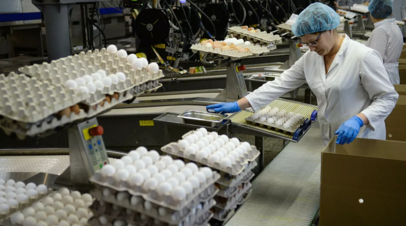</a></div></div></div><div class="card__summary
                        card__summary_all-new_cover
                        ">
                Россельхознадзор запретил ввоз продукции птицеводства из
 Дании из-за распространения на территории этой страны гриппа птиц.
            </div><div class="card__date-time
                    card__date-time_all-new_cover
                    "><time class="date" datetime="2020-11-23 15:40">
		23 ноября 2020, 15:40
	</time></div></div></div></li><li class="listing__column listing__column_all-new listing__column_js"><div class="listing__card "><div class="card card_all-new"><div class="card__heading
                    card__heading_all-new

                    "><a class="link link_color" href="https://russian.rt.com/science/news/805773-uchyonyi-mutaciya-koronavirusa">
                Учёный прокомментировал сообщения о мутации коронавируса
            </a></div><div class="card__cover card__cover_all-new"><div class="cover"><div class="cover__media cover__media_ratio "><a href="https://russian.rt.com/science/news/805773-uchyonyi-mutaciya-koronavirusa" class="cover__link link ">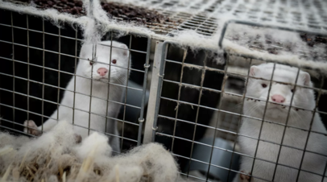</a></div></div></div><div class="card__summary
                        card__summary_all-new_cover
                        ">
                Президент Российского медицинского общества профессор
Евгений Ачкасов прокомментировал возможность возникновения новых,
опасных для человека штаммов коронавируса на фоне вспышки COVID-19 среди
 популяции норок в Дании.
            </div><div class="card__date-time
                    card__date-time_all-new_cover
                    "><time class="date" datetime="2020-11-23 12:07">
		23 ноября 2020, 12:07
	</time></div></div></div></li><li class="listing__column listing__column_all-new listing__column_js"><div class="listing__card "><div class="card card_all-new"><div class="card__heading
                    card__heading_all-new

                    "><a class="link link_color" href="https://russian.rt.com/world/news/805635-norki-ferma-franciya">
                Во Франции из-за COVID-19 уничтожат 1000 животных на норковой ферме
            </a></div><div class="card__cover card__cover_all-new"><div class="cover"><div class="cover__media cover__media_ratio "><a href="https://russian.rt.com/world/news/805635-norki-ferma-franciya" class="cover__link link ">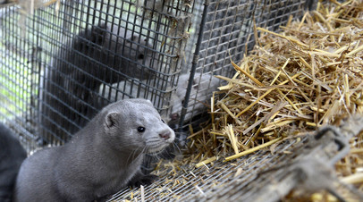</a></div></div></div><div class="card__summary
                        card__summary_all-new_cover
                        ">
                Во Франции был обнаружен очаг заболевания норок
коронавирусом в одном из хозяйств, в связи с чем 1 тыс. этих животных
будут уничтожены.
            </div><div class="card__date-time
                    card__date-time_all-new_cover
                    "><time class="date" datetime="2020-11-22 18:51">
		22 ноября 2020, 18:51
	</time></div></div></div></li></ul><div class="listing__button listing__button_js" data-href="/listing/tag.zhivotnye/prepare/all-new/15/1" style=""><div class="button"><a class="button__item button__item_listing" href="#">
            Загрузить ещё
        </a></div></div></div></div>

